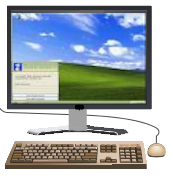
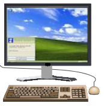

1. స్పెక్ట్రోఫోటోమీటర్తో పరిచయం.
2. పవర్ బటన్పై క్లిక్ చేసే పరికరాన్ని ఆన్ చేసి, వాయిద్యం ప్రారంభించడానికి 30 నిమిషాలు వేచి ఉండండి.
3. క్రింది రెండు పరిష్కారాలను సిద్ధం చేయండి: ఎ) పొటాషియం డైక్రోమేట్ (K2Cr2O7) యొక్క ~ 0.001 M మరియు బి) స్వేదనజలంలో m 5mg / L కెఫిన్. ఇక్కడ పరిష్కారాలు రెండు వాల్యూమెట్రిక్ ఫ్లాస్క్లలో చూపించబడ్డాయి. డ్రాప్-డౌన్ మెను నుండి కావలసిన పరిష్కారంపై క్లిక్ చేయడం ద్వారా కొలత కోసం ఒక పరిష్కారాన్ని ఎంచుకోవచ్చు.
4. శుభ్రమైన, పొడి బీకర్ తీసుకోవడానికి బీకర్పై క్లిక్ చేయండి.
5. శుభ్రమైన, పొడి బీకర్లో ద్రావణాన్ని పోయడానికి వాల్యూమెట్రిక్ ఫ్లాస్క్పై క్లిక్ చేయండి.
6. బీకర్ నుండి తగిన పరిమాణంలో ద్రావణాన్ని సేకరించడానికి మైక్రోపిపెట్ పై క్లిక్ చేయండి. నిజమైన ఆపరేషన్లో, ఒకరు మైక్రోపిపెట్కు తగిన చిట్కాను అటాచ్ చేసి, దాన్ని ద్రావణంలో ముంచడానికి ముందు దానిపై అవసరమైన వాల్యూమ్కు స్కేల్ను సెట్ చేస్తారు.
7. దానిపై క్లిక్ చేయడం ద్వారా క్యూట్ తీసుకోండి.
8. మైక్రోపిపెట్ నుండి క్యూవెట్పై క్లిక్ చేయడం ద్వారా ద్రావణాన్ని కువెట్లోకి పోయాలి. వాస్తవ కొలతలలో, కువెట్ దాని వాల్యూమ్లో మూడింట రెండు వంతుల వరకు నిండి ఉంటుంది.
9. తెరవడానికి స్పెక్ట్రోఫోటోమీటర్ మూతపై క్లిక్ చేయండి.
10. నమూనా హోల్డర్లో ఉంచడానికి కువెట్పై క్లిక్ చేయండి. ఈ కొలతలో నీటిని నమూనా ఖాళీగా లేదా సూచనగా ఉపయోగించాలి. ఇక్కడ డబుల్ బీమ్ స్పెక్ట్రోఫోటోమీటర్ చూపబడింది. ఈ సందర్భంలో, నమూనా నమూనాను నమూనా హోల్డర్లో (తరచుగా ముందు ఒకటి) మరియు నమూనా బ్యాంక్ లేదా రిఫరెన్స్ హోల్డర్లో (తరచుగా వెనుకవైపు) ఒకేసారి ఉంచవచ్చు.
11. తెరపై, స్పెక్ట్రల్ స్కాన్ యొక్క తరంగదైర్ఘ్యం పరిధిని నమోదు చేయండి.
కెఫిన్ కోసం: ప్రారంభం: 590 ఎన్ఎమ్ ముగింపు: 290 ఎన్ఎమ్.
K2Cr2O7 కోసం: ప్రారంభం: 700 nm ముగింపు: 325 nm. నిజమైన ఆపరేషన్లో, నమూనా కోసం సంఘటన కాంతి యొక్క తరంగదైర్ఘ్యం పరిధి ఎంచుకోబడుతుంది మరియు తరంగదైర్ఘ్యం స్కాన్ కంప్యూటర్ సాఫ్ట్వేర్ ద్వారా నడుస్తుంది. ఒకరు స్కాన్ను శోషక (ఎ) లేదా ట్రాన్స్మిటెన్స్ (% టి) మోడ్లో అమలు చేయవచ్చు.
12. తరంగదైర్ఘ్యం స్కాన్ను అమలు చేయడానికి కొలత సెటప్ స్క్రీన్పై ఆకుపచ్చ ‘స్టార్ట్’ బటన్పై క్లిక్ చేయండి. తరంగదైర్ఘ్యం స్కాన్ను గమనించండి. స్పెక్ట్రోఫోటోమీటర్ ఒకే పుంజం పరికరం అయితే, మొదట నమూనా ఖాళీ లేదా సూచన ఒక కువెట్లో తీసుకోబడుతుంది మరియు తరంగదైర్ఘ్యం స్కాన్ నమూనా తరువాత నడుస్తుంది. సంబంధిత తరంగదైర్ఘ్యాల కోసం నమూనా డేటా నుండి సూచన డేటాను తీసివేయాలి.
13. స్పెక్ట్రల్ స్కాన్ పూర్తయినప్పుడు క్లోజ్ బటన్ పై క్లిక్ చేయండి. నిజమైన ఆపరేషన్లో, స్కాన్ డేటా కంప్యూటర్లో నిల్వ చేయబడుతుంది. పరికరం డేటాను నిల్వ చేస్తుంది మరియు అందువల్ల నమూనా ఫైల్ పేరును అడుగుతుంది. డేటాను సేవ్ చేయడానికి ఒకరు ఫైల్ పేరును నమోదు చేస్తారు.
14. మరొక నమూనా కోసం కొలతను పునరావృతం చేయండి.
15. డేటా టాబ్పై క్లిక్ చేయడం ద్వారా డేటాను సేకరించండి.
16. నమూనా రెండింటికి మాదిరి వర్సెస్ తరంగదైర్ఘ్యం యొక్క శోషణ (లేదా ప్రసారం) ను ప్లాట్ చేయండి మరియు వీలైతే, రెండు నమూనాల స్పెక్ట్రాను అతివ్యాప్తి చేయండి.
17. రెండు నమూనాల కోసం ప్రధాన శిఖరాల కోసం గరిష్ట శోషణ యొక్క తరంగదైర్ఘ్యాలను నిర్ణయించండి


 
